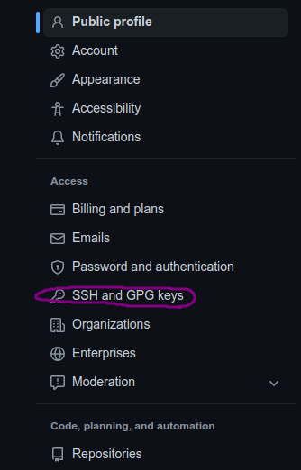
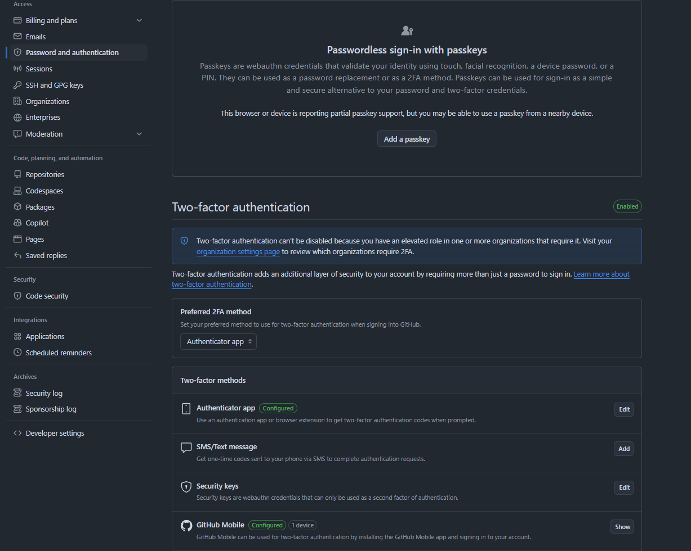
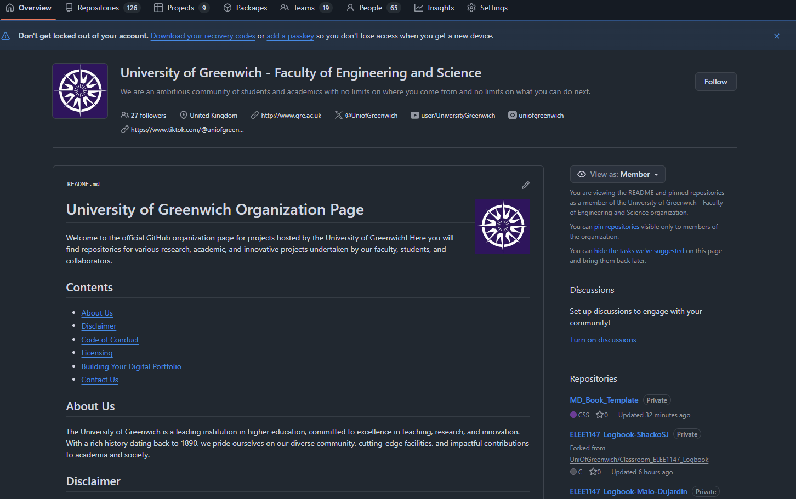

Documentation
- Version: 1.0.0
- View the deployment for a rendered documentation:
This template can used to create a place for all exercises or source of knowledge for your module, which is deployed as a webpage with the following address:
https://uniofgreenwich.github.io/Name_of_your_Repository, best practice is to prefix with the module code.
Examples:
How to...
Setting up Git/Github
Open Git Bash
First set your username:
Next set your email:
Security and authentication
You need to create an ssh key to push and pull to your online storage/repo before we try to sync with the cloud.
-
When you see
~, this means home,-
On the university imaged machines this typically is the
G Drive -
If you are not then this will be,
C/Users/<username>/, your home
-
Follow these instructions in the command line.
For every line requesting user input just press the enter key and until the command has finished.
Generating public/private ed25519 key pair.
Enter file in which to save the key (/home/yourusername/.ssh/id_ed25519):
Created directory '/home/yourusername/.ssh'.
Enter passphrase (empty for no passphrase):
Enter same passphrase again:
Your identification has been saved in /home/yourusername/.ssh/id_ed25519
Your public key has been saved in /home/yourusername/.ssh/id_ed25519.pub
The key fingerprint is:
SHA256:opMi+Jtjau26rE8pbgULmR4gI4SHnkxFV0dZVz1HO2g YourGitEmail
The key's randomart image is:
+--[ED25519 256]--+
|oooo ....oo. ..oo|
|B.. . .. . ..+|
|B=. E oo|
|+* . .|
|o + . S |
|.o o o . |
|+ * + |
|oBo+ . |
|*OO+ |
+----[SHA256]-----+
If you get a response
Saving key ".ssh" failed: No such file or directory
Then you need to do the following
mkdir ~/.ssh
and then repeat the previous step again.
Now you need to get your public key you have generated and add to GitHub.
myfirstrepository on dev
❯ cat ~/.ssh/id_ed25519.pub
ssh-ed25519 AAAAC3NzaC1lZDI1NTE5AAAAIBJf5t9RcKdkZwlxS14EZn91hDQndAjMIDz+c92kFtfC YourGitEmail
The copy the output from ssh-ed25519 ... YourGitEmail and follow the screenshots below.

- 


Once completed, go back to the terminal and lets check for a connection:
The authenticity of host 'github.com (140.82.121.4)' can't be established.
ED25519 key fingerprint is SHA256:+DiY3wvvV6TuJJhbpZisF/zLDA0zPMSvHdkr4UvCOqU.
This key is not known by any other names
Are you sure you want to continue connecting (yes/no/[fingerprint])? yes
Warning: Permanently added 'github.com' (ED25519) to the list of known hosts.
PTY allocation request failed on channel 0
Hi <Your GitHub Username>! You've successfully authenticated, but GitHub does not provide shell access.
Connection to github.com closed.
-
If you are on the university image and
~is theG Driveyou only have to do all the above once. -
You need to repeat if you do this on any other machine to set up the key, but again only once.
MFA
In order to access https://github.com/UniofGreenwich you need to have enabled MFA on your GitHub account, if you can see this repository you likely already have.
-
Navigate to Password and authentication and enable MFA:

Creating your markdown book
-
Inside the https://github.com/UniofGreenwich organisation page you create a new repository give it the following naming convention:
ModuleCode_Exercices -
Use the template option and search for
MD_Book_Template -
See gif below:

Tech Stack
This template includes the following tech stack: